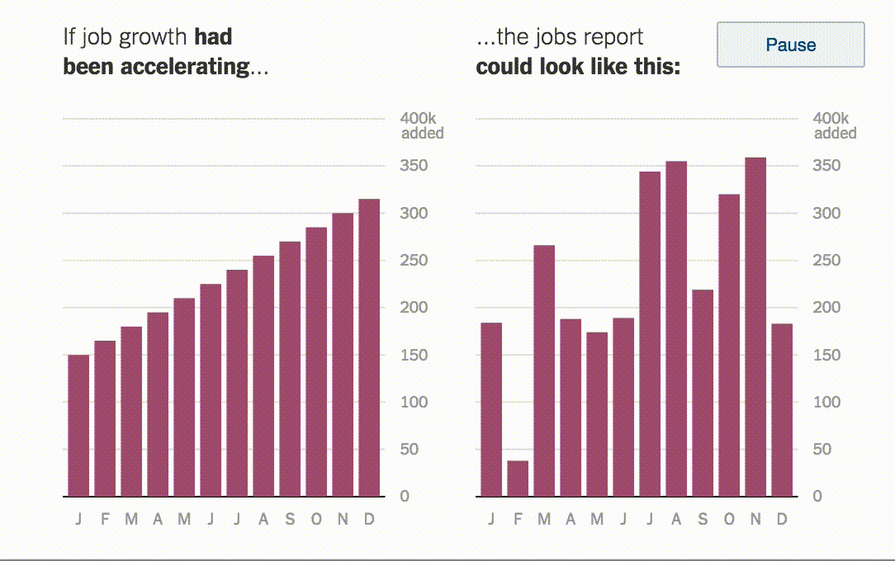
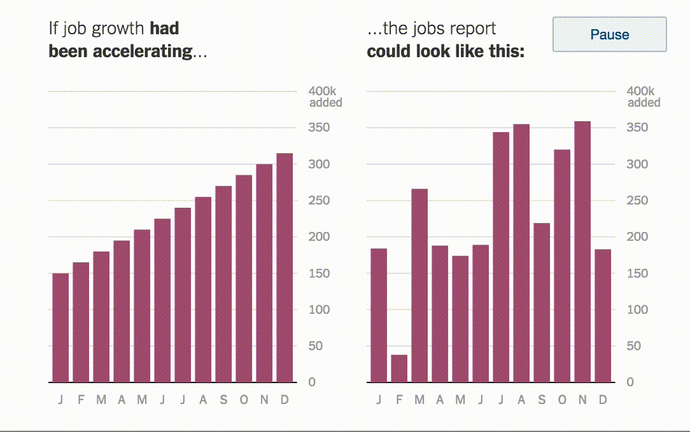

TMCF 2024
Navigating the garden of forking paths in data-driven science
7th February 2025
Huge thanks to the Turing Team
Our TMCF:
A research agenda for exploratory research
What does good* data-driven science look like?
——————–
*defensible | rigorous | theoretically-informed
What does good* data-
driven science look like?
——————–
*defensible | rigorous | theoretically-informed
And how do we get there?
> Explore
> Pre-register
> Test
Exploratory research needs rigor to serve its intended aim of facilitating scientific discovery. Whichever method is selected […] it needs to be implemented rigorously to maximize the probability of true discoveries while minimizing the probability of false discoveries.
Devezer et al. 2021
Rigour
– Repeatable analysis plans
– Known inference protocols
– Expectations for size and stability of effects
Richness
– Evolving analysis plans
– Informal inference (multiplicity)
– Effects situated within descriptive context
Our TMCF:
Workshop and outputs
1. Modelling paradigms
Establish what is distinctive about modelling in data-driven science by mapping out archetypal data-driven projects and the analysis practices they use.
2. Inference and replicability
Develop ways of documenting the context under which analytical findings are made – a grammar for structuring exploratory research findings – so that inferences can be reported.
3. Tools
For progressing from analysis to communication: documenting interactive data analysis processes with integrity – balancing claims to knowledge with informational complexity.

Before
> Provocations
> 500-word position statements
During
> Testing position statements
> 1500-word blogs
> concept paper
After
> concept paper: [wide] data analysis
> call to action for [wide] applications
Provocations
1. Modelling paradigms
– Heuristics trumps theory in data-driven research
– Models are exploratory artefacts
2. Inference and replicability
– Claims to knowledge can only be made through out-of-sample significance tests
– Pre-registration locks researchers into facile statistical tests
– Human-in-the-loop is incompatible with inferential and replicable analysis
3. Tools
– Visualizations are limited as evidence
– There is no formal beginning, process or an end to an interactive data analysis session, it is all context-dependent
– Provenance of exploratory data analysis processes are too complex and ad hoc to be useful
Provoking
All (good) analysis fundamentally requires human intervention. And that’s a strength, not a weakness.
If you look at your data before analysis, your p-values are wrong because you’ve spent researcher degrees of freedom. If you don’t look at your data before analysis, your p-values are wrong because your model is wrong.
Blogging
Panelling
Jogging
wide Data Analysis
——————–
[E]nabling
[W]ide
[D]etailed and
[I]nteractive
data practice
wide data analysis
[W]idening
[W]idening the data analysis process involves considering a broader range of approaches to problem solving than might otherwise be adopted. The aim is to encourage a mindset that is open to exploration, interpretation, multiple and complementary explanations of phenomena. They may be specific variations in some modelling parameterisation or more profound choices around methodological approach. Widening requires an evaluative and self-reflective critical perspective in selecting the range of approaches to consider and to make choices of which to adopt in practice
wide data analysis
[I]nteracting
[I]nteracting recognises and embraces the potential of human decision-making in every step of the data analysis workflow. We broaden its scope beyond the use of graphical systems for human-computer interaction to include all points where a human decision shapes and responds to the analytic process. This might be in the parameterisation of a model, the choice of data source, the synthesis of results – a touchpoint in the workflow that ties analysis to its underlying goals. By emphasising this broader view of interaction we open the myriad of choices that shape all data analysis to examination and reflection.
wide data analysis
[D]etailing
[D]etailing involves providing explicit accounts of the data analysis process in order to support scrutiny and interpretation and epistemological reflection. This added richness supports transparency and encourages an acknowledgment that human decision-making is present throughout the analysis process. That detail may include rich descriptive documentation of process and context, justifications of choices made, interpretations of results and reflections on the workflow.
wide data analysis
[E]nabling
[E]nabling involves making the adoption of widening, interacting and detailing strategies as easy as possible. We argue that even with a strong case for widening and deepening a data analysis workflow, this may not be implemented in practice if the cost of doing so is perceived as too high. In this paper we propose and speculate on a number of possible mechanisms by which we might enable more rigorous data analysis and provide a call to action to develop new enabling tools and practices.
wide foundations
Ways of doing wide
 

Gelman et al. (2023) Causal Quartets: Different Ways to Attain the Same Average Treatment Effect, The American Statistician
Biecek et al. (2024) Performance Is Not Enough: The Story Told by a Rashomon Quartet, Journal of Computational and Graphical Statistics
Cinelli et al. (2020) Making Sense of Sensitivity: Extending Omitted Variable Bias, Journal of the Royal Statistical Society Series B: Statistical Methodology
Kale et al. (2019) Hypothetical Outcome Plots Help Untrained Observers Judge Trends in Ambiguous Data, IEEE TVCG
wide foundations
Ways of thinking wide
– Bringing different model paradigms and traditions together
– Scientific exploration as storytelling
– Embracing uncertainty
Ways of doing wide
– Consider granularity, sensitivity, saturation
Finite sample robustness checks
Omitted variable bias
– Asking what-ifs
– Visualization for widening focus
Line-ups | Hypothetical outcome plots
Rashomon sets | Causal quartets
wide prompting questions
Widening questions
data
Can you think of anything not currently captured in your data that could be relevant? Whose perspectives have been excluded from the data collection/categorization? Do your data truthfully capture the phenomena you are interested in? Can the data provenance be identified and how might that provenance influence your analysis and interpretation? Have there been meaningful changes since your data were collected?
methods
How do you know if your sample is representative of the target population? Do your observations change with different spatial/temporal scales? How sensitive are your results to the parameter choices in your models?
methodological
Are there other approaches to the task that might yield different but meaningful perspectives? Are there critiques of your methodological approach? Do they apply here? Would bringing in a wider team of people, from different methodological traditions, result in alternative methodological approaches? How might your findings and interpretation compare with those arrived at via other methodological approaches?
wide prompting questions

wide case study
wide call-to-action

TMCF 2024 | British Library